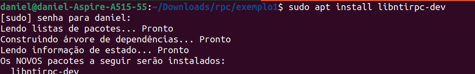
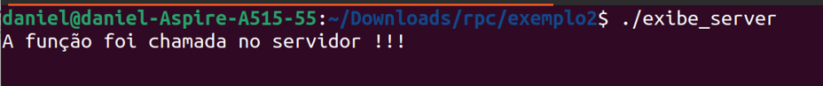
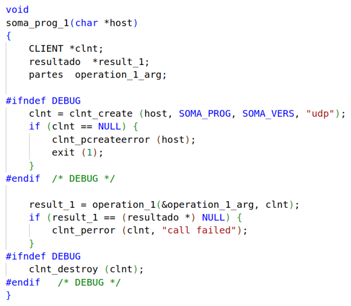
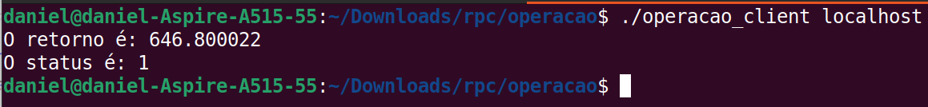

Sobre mim
Daniel Sucupira Lima
Foto tirada no campus da Universidade Estadual do Ceará, na frente do prédio do PPGCC.
Eu sou Daniel Sucupira Lima. Sou mestre em Ciência da Computação pelo Mestrado Acadêmico em Ciência da Computação da Universidade Estadual do Ceará (MACC/UECE), graduado em Ciência da Computação pela Universidade Estadual do Ceará (UECE) e graduado em Engenharia de Computação pelo Instituto Federal de Educação, Ciência e Tecnologia do Ceará (IFCE).
Agenda
- Introdução;
- Fundamentação teórica;
- Instalação;
- Exemplos práticos:
- Exemplo 1: Exibe 1
- Exemplo 2: Exibe 2
- Exemplo 3: Pergunta
- Exemplo 4: Quadrado
- Exemplo 5: Soma
- Exemplo 6: Calculadora
- Exemplo 7: Operação
- Conclusão;
- Referências.
Introdução
- Uma das práticas mais comuns em programas é a criação de funções;
-
Elas têm como características:
- Modularização de código;
- Evitar duplicação de código;
- Com alterações em um único local pode-se resolver problemas em diversas partes do código;
- Dentre outros.
- O comportamento dessa função é completamente definido no programa principal ou bibliotecas.
- A Figura a seguir ilustra um programa principal com uma outra função local:
- Cada programa, na memória principal, tem regiões. Isso é ilustrado na Figura abaixo:
- Funções tem endereços;
- Blocos tem limites
- A Figura a seguir ilustra endereços de funções e limites dos blocos:
- Em alguns casos, o código a ser chamado não está na máquina local;
- Exemplos:
- Obter um status de um serviço;
- Ativar determinado recurso;
- Executar um cálculo e obter o resultado;
- Executar uma transformação sobre dados locais (após upload) e baixar os resultados (com download).
- Pode-se usar, por exemplo, o modelo cliente/servidor;
- Deve-se criar um protocolo para essa comunicação;
- Deve-se fazer sockets para as trocas de mensagens;
- Deve-se empacotar/desempacotar parâmetros/resultados;
- Dentre outros.
- Seria interessante houvesse uma forma de simplificar essa comunicação entre clientes e servidores, facilitando as chamadas a métodos em outras máquinas.
- Existe uma forma de facilitar essa comunicação: RCP
- A figura abaixo ilustra o RPC em linhas gerais:
- Os autores Stephanie Wang, Benjamin Hindman e Ion Stoica escrevem o seguinte sobre RPC: "A chave por trás do sucesso do RPC é a semântica simples, mas poderosa, de seu modelo de programação".


Fonte: MAZIERO, Carlos. Memória processo. 2021. 1 imagem. 415 x 283 pixels. Disponível em: https://wiki.inf.ufpr.br/maziero/lib/exe/fetch.php?media=prog2:memoria-processo.png. Acesso em: 22 de abril de 2023.

Fonte: ARORA, Ridze. Remote procedure call. 2020. 1 imagem. 500 x 250 pixels. Disponível em: https://i.pinimg.com/564x/68/7b/2c/687b2cf1cff474b693ec10c97a7a6c0a.jpg. Acesso em: 2 de abril de 2023.
Fundamentação teórica
- O RPC permite a chamada à procedimentos remotos;
- Ele cria uma interface simples e elegante para essa chamada;
- Essa interface é feita através dos stubs;
- Existe um stub para o cliente e outro para o servidor.
- A Figura a seguir ilustra os stubs:
- Observe que os stubs recebem os dados da camada superior como parâmetros e monta uma mensagem a ser enviada como cadeia de bytes;
- Esse processo de empacotamento é chamado de Marshalling ou packaging;
- Observe ainda que os stubs devem entregar dados para a camada superior como parâmetros, desmontando uma mensagem que veio como cadeia de bytes;
- Esse processo de desempacotamento é chamado de unmarshalling ou unpacking.
- A Figura a seguir ilustra os empacotamentos e desempacotamentos:

Fonte: KRZYZANOWSKI, Paul. Steps in executing a remote procedure call. 2021. 1 imagem. 482 x 303 pixels. Disponível em: https://people.cs.rutgers.edu/~pxk/417/notes/images/rpc-flow.png. Acesso em: 2 de abril de 2023.

Fonte: PAWAN, V. Steps of RPC. 2021. 1 imagem. 540 x 303 pixels. Disponível em: https://media.licdn.com/dms/image/C5612AQE7IHr8My57Nw/article-inline_image-shrink_1500_2232/0/1624297081904?e=1687392000&v=beta&t=iWAOxDx4MS-9FsHRjiBA2x42-h4BjOZDuM8MgZD71gU. Acesso em: 2 de abril de 2023.
Instalação
- Exibe-se neste trabalho como instalar duas versões do RPC a serem usadas pela linguagem de programação C;
- Dependendo do sistema operacional e da sua versão os procedimentos mudam;
- Características da máquina:
- Sistema operacional: Ubuntu;
- Versão: Ubuntu 22.04.2 LTS - Jammy Jellyfish;
- Tipo: 64 bits.
- Passo 1 da instalação:
- As novas versões de ubuntu não tem, por padrão, as ferramentas essenciais de compilação de programas C/C++;
- Caso sua máquina não tenha, instale-as.
- Passo 2 da instalação:
- Verifique se sua máquina já tem as ferramentas de RPC.
- Como minha máquina ainda não tinha, eu instalei.
- Verifique a instalação.


Exemplos práticos
- Em cada um dos exemplos deve-se criar o arquivo que definirá:
- Funções a serem chamadas;
- Estruturas de dados a serem usadas;
- Versões das definições;
- Esse arquivo tem a extensão .x.
- Exemplo 1: Exibe 1:
- Demonstro a interface exibe.x, do exemplo 1;
- Crio uma pasta em ~/Downloads/rpc/exemplo1;
- Crio um único arquivo, que é o exibe.x;
- Deve–se gerar os stubs de cliente e servidor;
- Para gerar os stubs deve-se executar o comando: rpcgen -a -C exibe.X:
- Flag a: cria todos os arquivos de cliente e servidor;
- Flag C: cria códigos no modo ansi c.
- O arquivo exibe.x é ilustrado na Figura abaixo:
- A execução do comando rpcgen sobre o arquivo exibe.x é ilustrado na Figura abaixo:
- O código gerado já está pronto para uso;
- Foram criados códigos de cliente e servidor;
- Define-se funções que chamam os códigos de stub;
- Tudo isso já está pronto, até exibindo em quais locais personalizar a funcionalidade;
- Também foi fornecido um arquivo Makefile;
- Dependendo do seu sistema operacional, já está operacional a utilização da biblioteca de rpc;
- Nas versões de Ubuntu como 14.04 o Makefile já estava finalizado;
- Nessa versão do 22.04 não está pronto ainda;
- A Figura abaixo ilustra um erro ao usar o arquivo makefile:
- Esse erro ocorreu pois não se sabe em qual pasta estão os arquivos de cabeçalho e ainda não se está indicando quais arquivos de implementação linkar;
- Resolvi procurar em qual pasta estão esses conteúdos;
- A Figura seguinte exibe o resultado:
- A imagem anterior mostrou que o comando rpcbind instalou a versão do rpc chamada TIRPC;
- Pode-se instalar outras versões, como o NTIRPC: 
- Agora tem-se as seguintes bibliotecas:
- Deve-se indicar estas pastas para o Makefile;
- A versão padrão está da seguinte forma:
- Para indicar o tirpc:
- Cabeçalhos: /usr/include/tirpc/;
- Linkar: -l tirpc.
- Para indicar ntirpc:
- Cabeçalhos: /usr/include/ntirpc/;
- Linkar: -l ntirpc.
- Escolhi a biblioteca tirpc, por ser a instalação padrão que é obtida com o rpcbind.
- Essa escolha é ilustrada na Figura abaixo:
- Já é possível ter sucesso ao chamar o comando make:
- A implementação padrão não vem com código;
- Executa-se primeiramente o servidor;
- Executa-se então o cliente.
- Não ocorre nenhuma saída no servidor:
- A partir de então serão construídos exemplos de minha autoria a fim de mostrar diferentes recursos do rpc:
- Exibe 1;
- Exibe 2;
- Pergunta;
- Quadrado;
- Soma;
- Calculadora;
- Operação.
- Exemplo 2: Exibe 2:
- O método invocado no servidor exibe uma mensagem;
- Devem ser repetidos cada um dos passos;
- Eles foram executados na pasta ~/Downloads/rpc/exemplo2;
- Código padrão:
- Código alterado:
- Executa-se primeiramente o servidor:
- Executa-se então o cliente:
- Ocorre a seguinte saída no servidor: 
- Exemplo 3: Pergunta:
- O método invocado no servidor entrega uma resposta;
- Devem ser repetidos cada um dos passos;
- Eles foram executados na pasta ~/Downloads/rpc/pergunta;
- Código padrão:
- Código alterado:
- Código padrão:
- Código alterado:
- Executa-se primeiramente o servidor:
- Executa-se então o cliente:
- Ocorre a seguinte saída no servidor:
- Exemplo 4: Quadrado:
- Ilustra como enviar um parâmetro;
- Devem ser repetidos cada um dos passos;
- Eles foram executados na pasta ~/Downloads/rpc/quadrado.
- Código padrão:
- Código alterado:
- Código padrão:
- Código alterado:
- Executa-se primeiramente o servidor:
- Executa-se então o cliente:
- Ocorre a seguinte saída no servidor:
- Exemplo 5: Soma:
- Ilustra como enviar 2 parâmetros;
- Pode-se pensar que é necessário apenas colocar dois atributos int.
- Devem ser repetidos cada um dos passos;
- Eles foram executados na pasta ~/Downloads/rpc/somateste.
- Considere a seguinte declaração:
- A prática mostra que, para enviar dois inteiros, não basta colocar apenas dois atributos:
- Então, o que deve ser feito?
- Deve-se criar um tipo de dados com o conteúdo desejado:
- O código foi colocado na pasta ~/Downloads/rpc/soma;
- Devem ser repetidos cada um dos passos.
- Código padrão:
- Código alterado:
- Código padrão:
- Código alterado:
- Executa-se primeiramente o servidor:
- Executa-se então o cliente:
- Ocorre a seguinte saída no servidor:
- Exemplo 6: Calculadora:
- Ilustra como ter mais de uma função;
- Devem ser repetidos cada um dos passos;
- Eles foram executados na pasta ~/Downloads/rpc/calculadora.
- O seguinte arquivo .x é feito:
- Código padrão:
- Código alterado:
- Código padrão:
- Código alterado parte 1:
- Código alterado parte 2:
- Executa-se primeiramente o servidor:
- Executa-se então o cliente:
- Exemplo 7: Operação:
- Ilustra:
- Como ter estruturas compostas;
- Que é possível usar diferentes tipos de dados;
- Que o retorno também pode ser uma estrutura.
- Devem ser repetidos cada um dos passos;
- Eles foram executados na pasta ~/Downloads/rpc/operacao.
- Código padrão:
- Código alterado:
- Código padrão: 
- Código alterado parte 1:
- Código alterado parte 2:
- Executa-se primeiramente o servidor:
- Executa-se então o cliente: 


Conclusão
- O RPC é um recurso muito poderoso;
- Ele disponibiliza diversos recursos para uma comunicação;
- Sistemas eficientes podem ser feitos com base em sua utilização.
Referências
- MAZIERO, Carlos. Memória processo. 2021. 1 imagem. 415 x 283 pixels. Disponível em: https://wiki.inf.ufpr.br/maziero/lib/exe/fetch.php?media=prog2:memoria-processo.png. Acesso em: 22 de abril de 2023.
- ARORA, Ridze. Remote procedure call. 2020. 1 imagem. 500 x 250 pixels. Disponível em: https://i.pinimg.com/564x/68/7b/2c/687b2cf1cff474b693ec10c97a7a6c0a.jpg. Acesso em: 2 de abril de 2023.
- KRZYZANOWSKI, Paul. Steps in executing a remote procedure call. 2021. 1 imagem. 482 x 303 pixels. Disponível em: https://people.cs.rutgers.edu/~pxk/417/notes/images/rpc-flow.png. Acesso em: 2 de abril de 2023.
- WANG, Stephanie; HINDMAN, Benjamin; STOICA, Ion. In reference to RPC: it's time to add distributed memory. In: HotOS. 2021. p. 191-198.
- PAWAN, V. Steps of RPC. 2021. 1 imagem. 540 x 303 pixels. Disponível em: https://media.licdn.com/dms/image/C5612AQE7IHr8My57Nw/article-inline_image-shrink_1500_2232/0/1624297081904?e=1687392000&v=beta&t=iWAOxDx4MS-9FsHRjiBA2x42-h4BjOZDuM8MgZD71gU. Acesso em: 2 de abril de 2023.
- Emojiterra team. Rosto pensativo emoji. 2017. 1 imagem. 303 x 303 pixels. Disponível em: https://images.emojiterra.com/google/android-12l/512px/1f914.png. Acesso em: 2 de abril de 2023.
- EV Comunicação. Conheça seu público alvo. 2015. 1 imagem. 461 x 303 pixels. Disponível em: http://varizes.net.br/wp-content/uploads/2019/06/duvida1-970x637.jpg. Acesso em: 2 de abril de 2023.